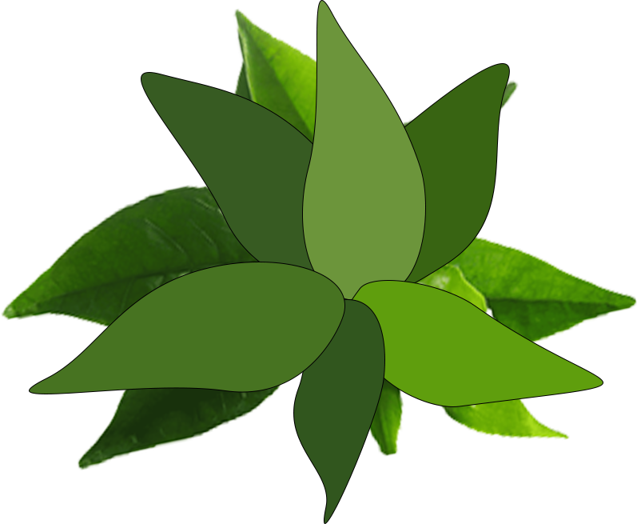
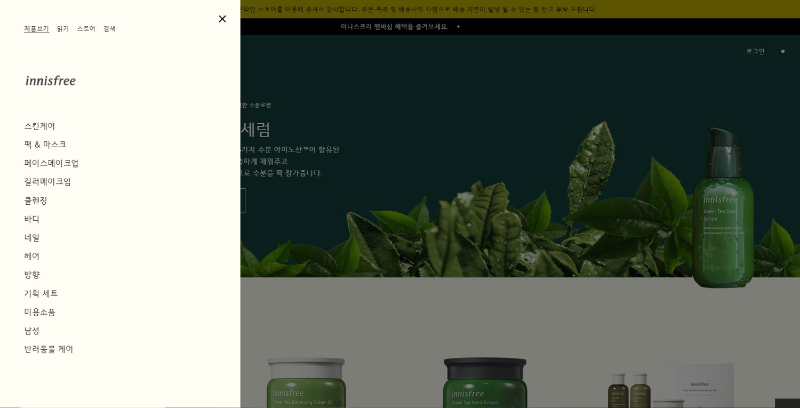
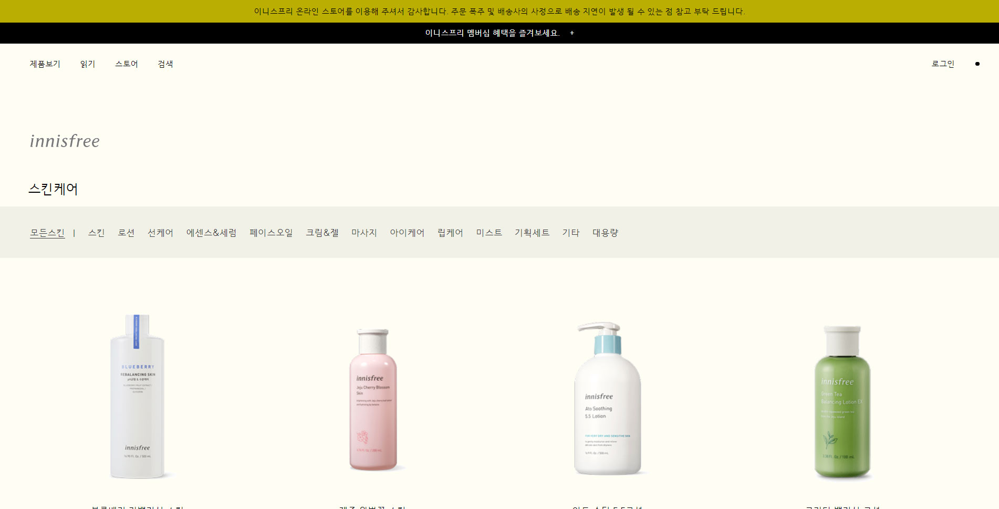
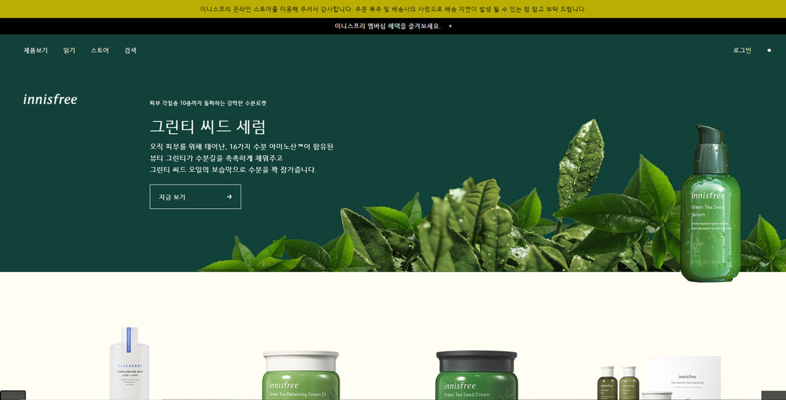

INNISFREE ONLINE

Innisfree Online has renewed its original Innisfree page
in the style of Aesop's homepage.
The Innisfree's needed information and functions, and created the atmosphere of
Aesop's pages.
I thought Innisfree's naturalist image and
Aesop's warm and emotional
atmosphere would go well together.
You have selected Aesop.
As a result, I think the good page was completed without losing the image of
Innisfree and the warm emotion of Aesop.
RENEWED
01. MENU SIMPLIFICATION
The existing Innisfree site had so many menus that I couldn't see the menu at a glance.
So we're going to simplify the menu to a total of four, and we're going to divide the sub-menu into
each part and we can't see it
I changed
it so that only the menu I wanted can be seen simply.

02. IMAGE SIMPLIFICATION
Since it is a shopping site, there are not only many images of the product,
The problem was that the entire site looked messy and the product was not visible at a glance
because there was a lot of information.
So the renewal site
changed to the simplest image so that the product could stand out.
The product images are also drawn and inserted so that only the product can be seen.

03. COLOR CHANGE
I chose Innisfree's naturalist green color, and the overall background is green and good.
I chose ivory color that fits well and gives a clean and warm feeling.
There are many colors in the products, so they can stand out.
I used a lot of achromatic colors.
